Maximilian Van Zandt
Applied statistician working on causal inference and experimentation.
I care about formulating precise, impactful questions, choosing the statistical methods that answer them, adding complexity only where it helps, and ending with a recommendation and a plan, while staying clear about what the data cannot tell you.
About
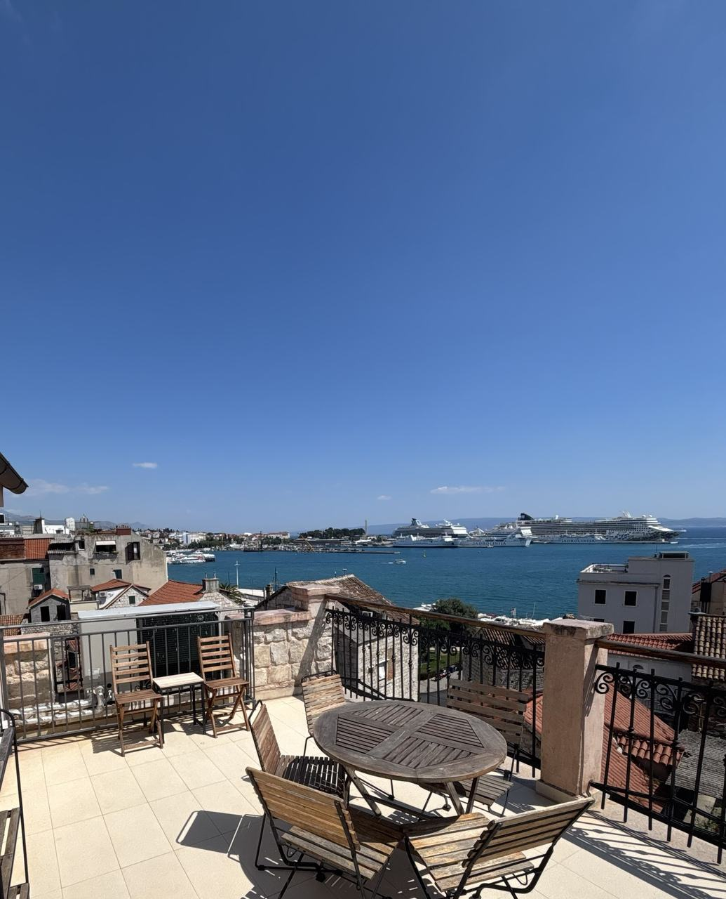
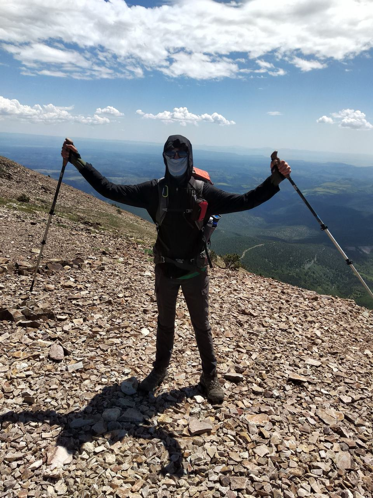
I am finishing an MA in Statistics and Data Science at UC Berkeley, where my coursework is built around causal inference and experimentation. The thread through everything I do is the same: answering questions through experimentation, probabilistic modeling, and inference. I have always been more interested in the why behind a method than the how.
Before Berkeley, I finished a BS in Statistics at UVA with a minor in philosophy, mostly analytic moral philosophy. The philosophy shows up more than you would expect: two of the projects below started as an argument I wanted to understand by building it. In some ways minoring in philosophy is just a bit of fun. It is also more than that: the statistics degree builds a map of how we do statistics, and the philosophy sharpens the question of why we do it and for what purpose.
That points at two kinds of work. In tech, experimentation at scale and causal inference on observational data. In pharma, the same core under a different constraint set, where you design the randomization yourself and the methodology is clinical trials.
At Iridium, I was given one contact name and an open-ended mandate: work out why devices were not converting to activated subscriptions fast enough. There was no pipeline and no established methodology. I scoped it down to two time points, ship date and activation date, and when those turned out to live in separate systems I sent the data engineering team a sample SQL query to make clear exactly what was needed and to cut down the back and forth. Nonparametric survival analysis on censored, incomplete data surfaced provisioning lags of over 200 days. That escalated to the executive director level, became activation probability predictions that shaped supply chain and business planning across verticals, and grew into a dashboard initiative that later added a third time point. During that time, I also built an ML model predicting global flight routes using HDBSCAN clustering, which cut flight data pulls by 75%.
At Biokind Analytics I led statistical consulting for healthcare nonprofits, on questions like risk factors for relapse of acute malnutrition in children, where much of the work is translating findings for people who do not work in statistics. Alongside that I took a full course in clinical trials methodology and wrote a Phase II protocol, including a detailed SAP, for an obesity drug RCT.
Outside of statistics, I have played percussion for over fifteen years and lead a band that opened for Neon Trees at John Paul Jones Arena. I am always looking for ways to use statistics to better understand music. My other interests are aviation, the Washington Nationals, making the perfect cup of coffee, and anything outdoors.
- Peer AmbassadorUC Berkeley, MA Statistics & Data Science2026–27
- Data Science InternIridium Satellite Communications2025–26
- Statistics Teaching AssistantUniversity of Virginia2025–26
- Lead Data AnalystBiokind Analytics2025
- Team Lead, NFL Big Data BowlUVA Sports Analytics & Statistics Laboratory2023–25
- Aviation Business Development InternIridium Satellite Communications2024
Projects
Code and write ups live in their own repositories. The interactive pieces run live, so you can push on the analysis instead of reading my conclusions.
Study design and the credibility of evidence
Exploring the impact of model and study design choices on both predictive performance and inferential rigor.
-
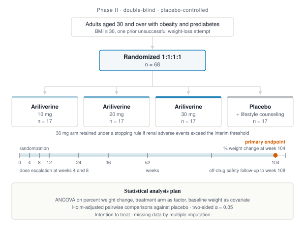
2026Phase II Clinical Trial Protocol
A double-blind, placebo-controlled Phase II protocol for an obesity drug, randomizing 68 patients 1:1:1:1 across three doses and placebo at 17 per arm. Sized as 20% of a 328-patient full-scale estimate at 80% power and d = 0.49, inflated for 20% annual dropout compounded over two years. The primary endpoint is percent change in body weight at week 104, analyzed by ANCOVA with treatment arm as the factor and baseline weight as a covariate, with Holm-adjusted pairwise comparisons against placebo. Built with Isabel Xiao and Rowan Rosenblum.
The full written protocol is a University of Virginia course document and is not publicly available. The design presentation is in the repository.
- RCT design
- power analysis
- ANCOVA
- ITT
-
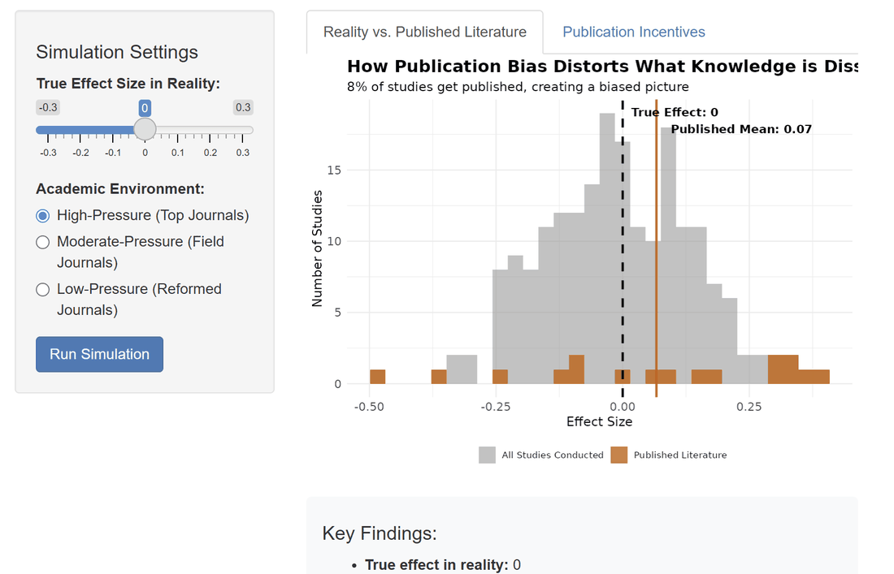
2025Publication Bias Simulation
Turns an argument from the philosopher Liam Kofi Bright into a working model. If journals reward significant findings, what does the published record look like next to the research that was actually conducted? The publication model follows Moss and De Bin (2021). It illustrates a mechanism rather than estimating real publication rates.
- R
- Shiny
- simulation
-
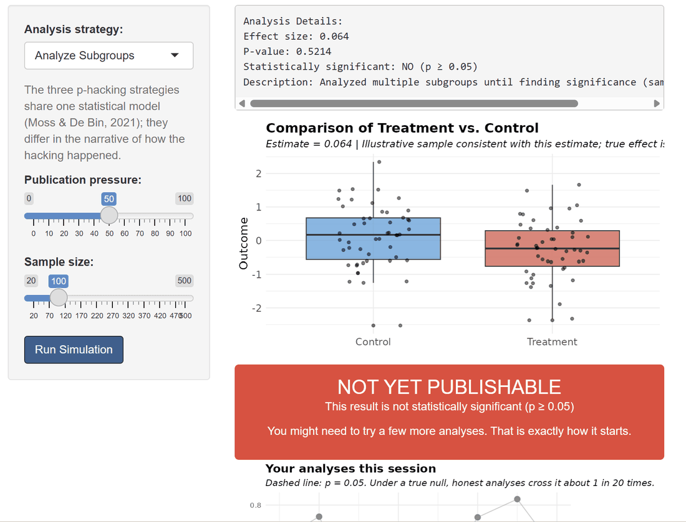
2025P-Hacking Under Publication Pressure
A companion piece where you play the researcher. Pick an analysis strategy, set the publication pressure, and watch significance appear when the true effect is exactly zero. The p-hacking model also follows Moss and De Bin (2021).
- R
- Shiny
- simulation
-
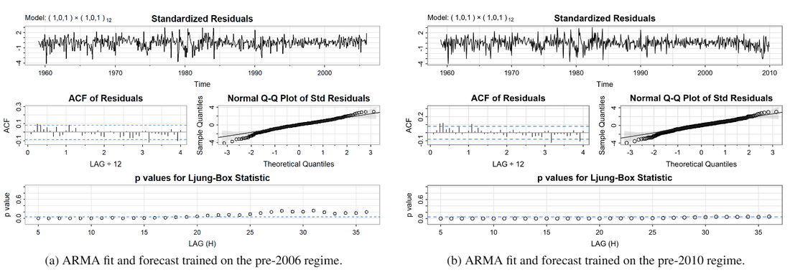
2025Impact of Recession on Housing Starts Forecasting
Compares time domain and frequency domain forecasting through the 2008 financial crisis, across 612 monthly observations of US housing starts from 1959 to 2010. A SARIMA(1,0,1)(1,0,1)[12] fit showed regime-dependent forecast failure: models trained before 2006 systematically overpredicted the recovery, while post-crisis training produced intervals that captured it. Spectral analysis located a shift in the dominant cycle from 8 years to 10.4 years. Co-authored with Sami Adam.
- R
- SARIMA
- spectral analysis
Structure in high-dimensional data
Building feature spaces out of messy raw material, then finding out what structure is in them.
-
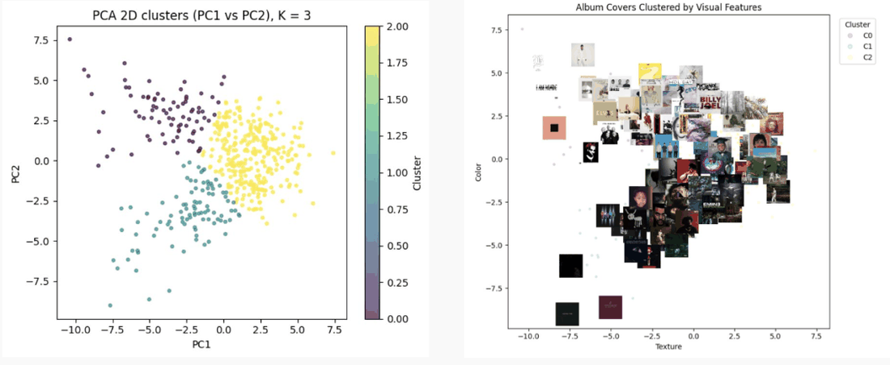
2025 · Statistics capstoneAlbum Covers and Billboard Success
Predicts Billboard 200 success from cover art alone. The team engineered a 70-dimensional visual feature space across 2,084 covers, using scikit-image for Sobel edge detection, Local Binary Patterns and HSV color statistics, plus YOLO for face and person detection. I worked mainly on the unsupervised side, extracting information from the pixels themselves and running K-means with PCA to separate albums into edge complexity and color pattern clusters at a silhouette score of 0.525. I also wrote the methods and limitations sections. The supervised models reached 0.87 ROC-AUC with L1-regularized logistic regression on a 417-album test set. Built with Haoting Yuan, Maxwell Elim, and Grant Zou.
- Python
- scikit-learn
- scikit-image
- YOLO
- PCA
-
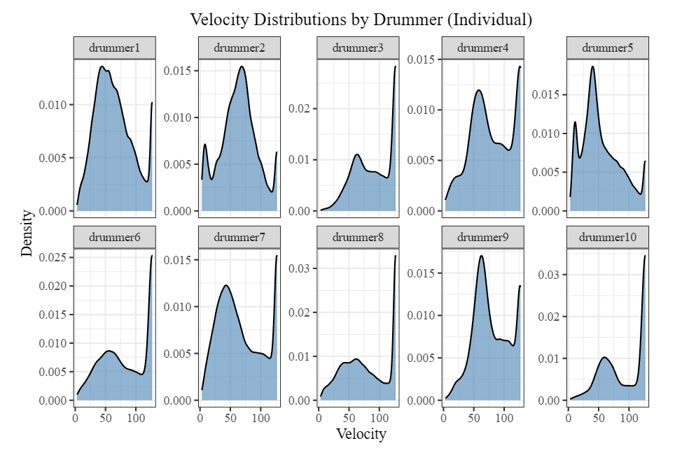
2025Drumming Styles: A Distributional Feature Analysis
Asks whether individual drummers have a measurable statistical signature. A 32-dimensional feature space built from 446,312 MIDI drum hits across 10 professional drummers, then PCA to find three interpretable playing style dimensions capturing 63.8% of variance: kit utilization, power and tempo, and timing articulation. Gaussian KDE on velocity and inter-onset intervals found three velocity typologies, and 3-state hidden Markov models fitted by Baum-Welch quantified drummer-specific state persistence between 0.25 and 0.70.
- Python
- R
- PCA
- KDE
- HMM
-
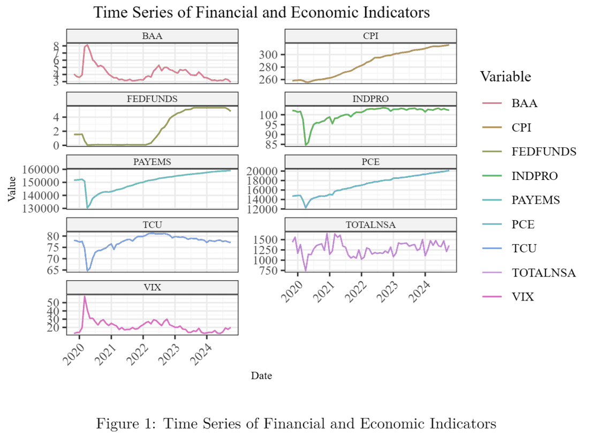
2024Kernel CCA for Market Analysis
Applies kernel canonical correlation analysis to nine macroeconomic and market series from FRED, looking for nonlinear association between market sentiment and economic fundamentals that linear methods miss. Exploratory analysis around March 2020 showed relationships no rotation of the data could line up, which is the case for the kernel extension. A linear CCA baseline with a Wilks' Lambda test runs first, then a Gaussian kernel maps the data into a higher dimensional feature space.
- R
- kernel methods
- FRED
Sports analytics
Tracking data, play-by-play, and five seasons of a team I have watched closely enough to know what the numbers are missing.
-
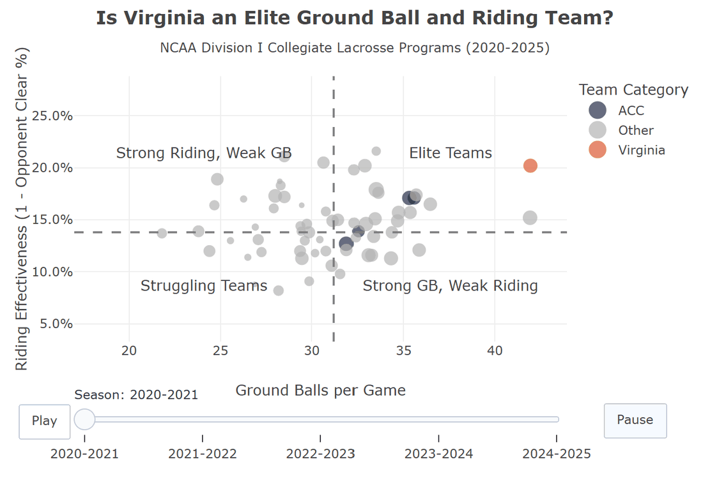
2025The Evolution of Virginia Lacrosse
Follows five seasons of UVA men's lacrosse through a change in offensive coordinator, using goal differential, shooting and extra man efficiency, the distribution of scoring across players, and hustle metrics. It is a full data-driven narrative rather than a single chart: the argument builds section by section, and you filter by conference and metric as you follow it, so you can check the reasoning yourself instead of taking my conclusions on faith.
- R
- Shiny
- plotly
- ggplot2
-
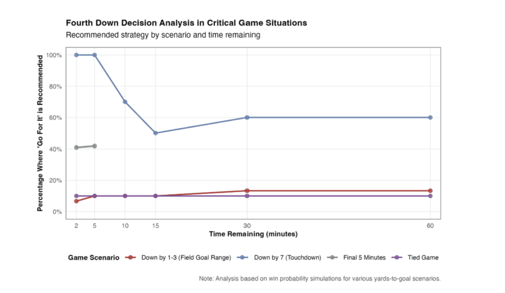
2025SportsSimulations
A simulation framework for NFL fourth down and goal decisions. Logistic and multinomial regression, mixture models, and win probability modeling to work out when a team should go for it rather than kick, across game states and time remaining. Built with Andrew Tran, Zain Bangash, and JJ Sutkus in an advanced sports analytics course.
- R
- mixture models
- win probability
-
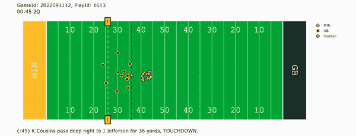
2024–25NFL Big Data Bowl
UVA Sports Analytics and Statistics Laboratory's Big Data Bowl submissions, which I led. The 2025 entry, Beyond the Snap, used pre-snap player tracking data to build the Motion Leverage Index, quantifying how much pre-snap motion actually buys a team. The 2024 entry examined tackling, building metrics for tackle force, missed tackle proportion, and tackle effectiveness. Several metrics were adopted into the lab's wider research portfolio. Built with Clayton Walther, Mehul Pol, and Andrew Hunter.
- R
- player tracking
- machine learning
Skills
My current work at Berkeley is in an advanced topics course in causal inference, built around paper replication and original research, along with participation in the Causal Reading Group.
UC Berkeley
- Advanced Causal Inference
- Advanced Probability
- Advanced Statistics
- Machine Learning for Decision-Making
- Statistical Computing
University of Virginia
- Clinical Trials Methodology
- Nonparametric Statistics
- Multivariate Statistics
- Time Series
- Linear Models
- Data Mining
- Machine Learning
- Design and Analysis of Sample Surveys
Methods
Languages
Libraries
Tooling
Contact
Open to full-time statistician and data scientist roles for May 2027. Most interested in experimentation and causal inference, in tech or pharma. I have internship experience in machine learning too. Happy to talk either way!